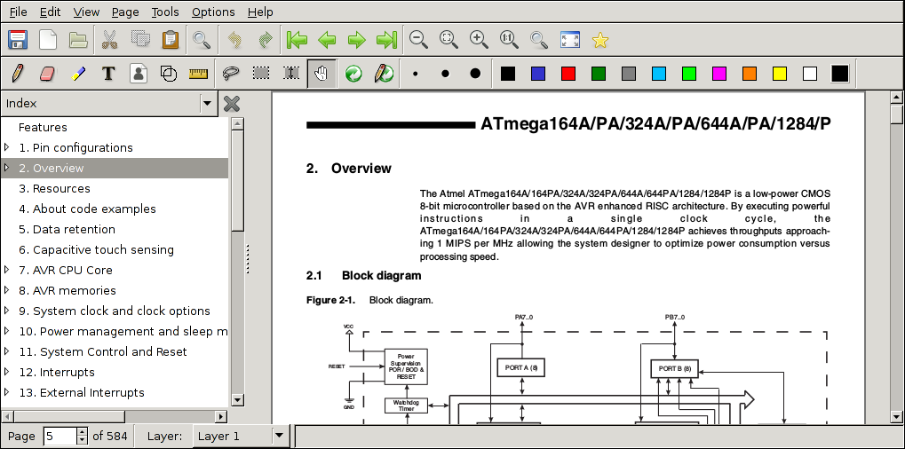
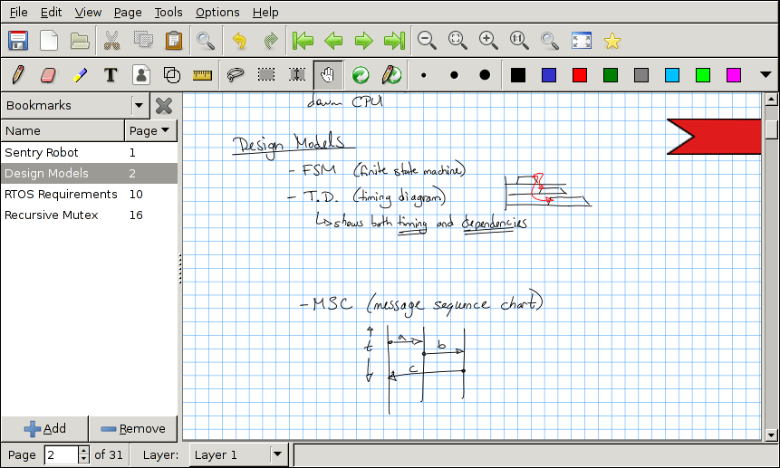
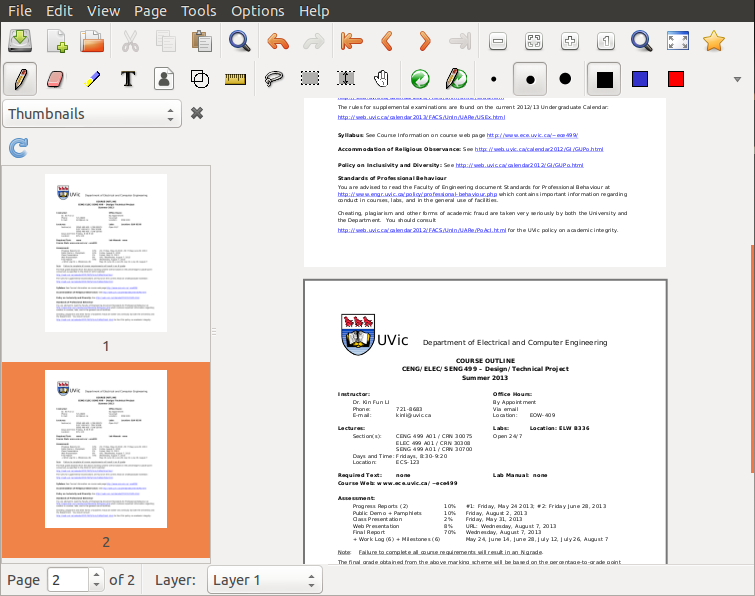
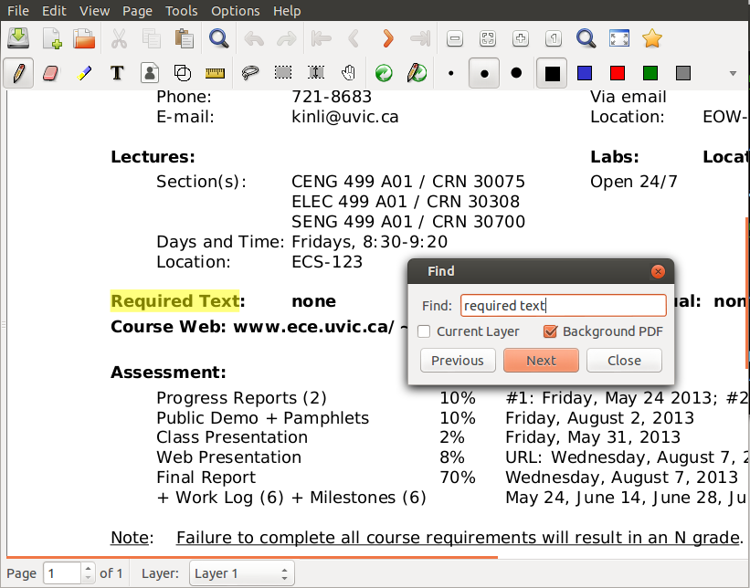
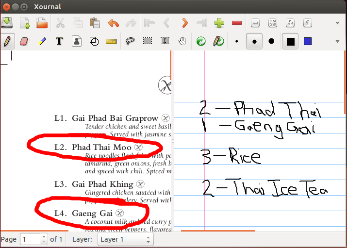

New Features
A number of commonly-requested features were added to Xournal.
Index
Also known as a table of contents, the indices are a list of read-only titles that are loaded from the background PDF. When a specific index is clicked in the sidebar, the Xournal document jumps to the page referenced by the index. If a user has duplicated a page in the Xournal document (the default action for Edit->New Page), clicking on an index jumps to the first page with the corresponding PDF background.

Bookmarks
Similarly to the PDF Index, bookmarks allow for the user to quickly navigate within the Xournal document. Unlike PDF indices however, bookmarks are user creatable, modifiable, and deletable. Bookmarks also have a visual element displayed on the right side of the page itself.

Thumbnails
Scaled-down images of each page are shown in the sidebar. Thumbnails are useful because it is much easier to find a given page by quickly scrolling through the thumbnails than by searching through the actual document. Also, thumbnails can be used to navigate directly to a page by clicking the corresponding thumbnail.

Search
Xournal is commonly used to edit large PDF documents, sometimes in the hundreds of pages. Many of these documents are composed largely of text, but the current version of Xournal provided no means for users to search the document for text patterns. Search functionality was added to Xournal to find and highlight text matches in the background PDF document, as well as text annotations that the user added.

Dual Windows
In order to increase user efficiency, the addtional functionality of have two editing windows was added. Having two editing windows increases the possibilites of editing such as reading a PDF and writing notes, annotating two PDFs at once, or taking two sets of notes.